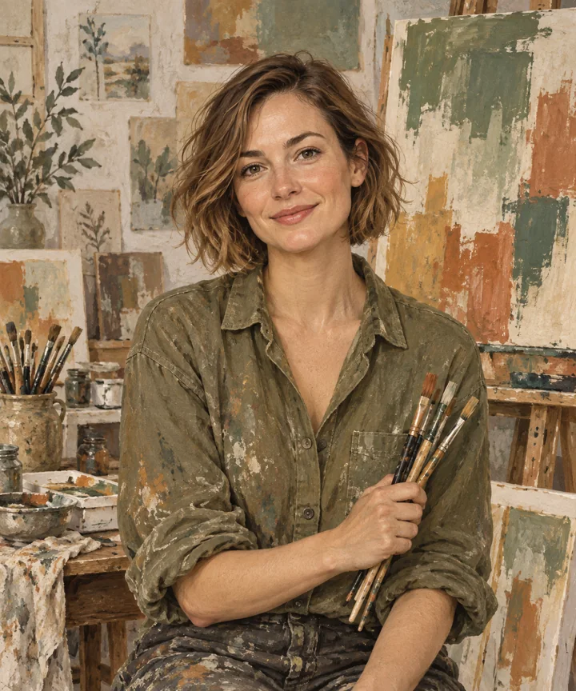

К содержимому
✳
Центр творческих
мастерских
Меню
Мастер-классы
Преподаватели
Расписание
Сертификаты
Журнал
Контакты
✳
Наши преподаватели
Глина и форма
АЛ
Анна Лебедева
Керамика и ручная лепка
Познакомиться с мастером
↗

Цвет и композиция
МВ
Мария Волкова
Живопись и композиция
Познакомиться с мастером
↗
Дерево и фактура
ИС
Илья Соколов
Работа с деревом
Познакомиться с мастером
↗